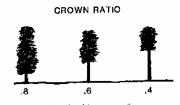

|
|
Crown Ratio |
Crown ratio is the proportion of the total vertical tree height that is occupied by the vertical length of the tree crown (Figure 16). Crown ratio and canopy height are used to find canopy base height, which is used to calculate tree crown length scorched in the MORTALITY module. Crown ratio is also used in the SURFACE module to calculate wind adjustment factor
|
I/O |
Module |
If |
Notes |
| Input | MORTALITY | If canopy base height is not entered for CROWN. | |
| SURFACE | If wind adjustment factor is calculated and if canopy base height is not entered for CROWN. | ||
| Output | SURFACE | If wind adjustment factor is calculated and canopy base height is entered for CROWN. |
|  |